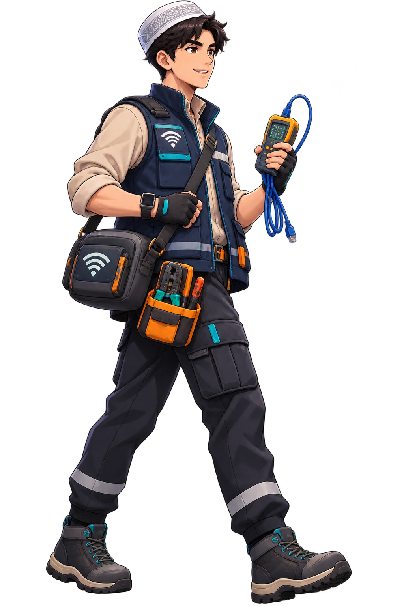

TAP / PANAH UNTUK BERGERAK
🎮 MEDIA PEMBELAJARAN JARINGAN KOMPUTER
SAMBUNGKAN JARINGAN.
SAMBUNGKAN JARINGAN.
WUJUDKAN IMPIAN.
Jadilah teknisi WiFi yang membantu warga. Selesaikan pekerjaan, kumpulkan upah, dan bangun tabungan untuk perjalanan naik haji.
⚡ 16 pekerjaan singkat🎧 Bunyi perangkat🛠 Interaksi langsung

“Satu sambungan lagi, satu langkah menuju cita-cita!”
TECHNICIAN ID • 001CONNECTED FOR A DREAM